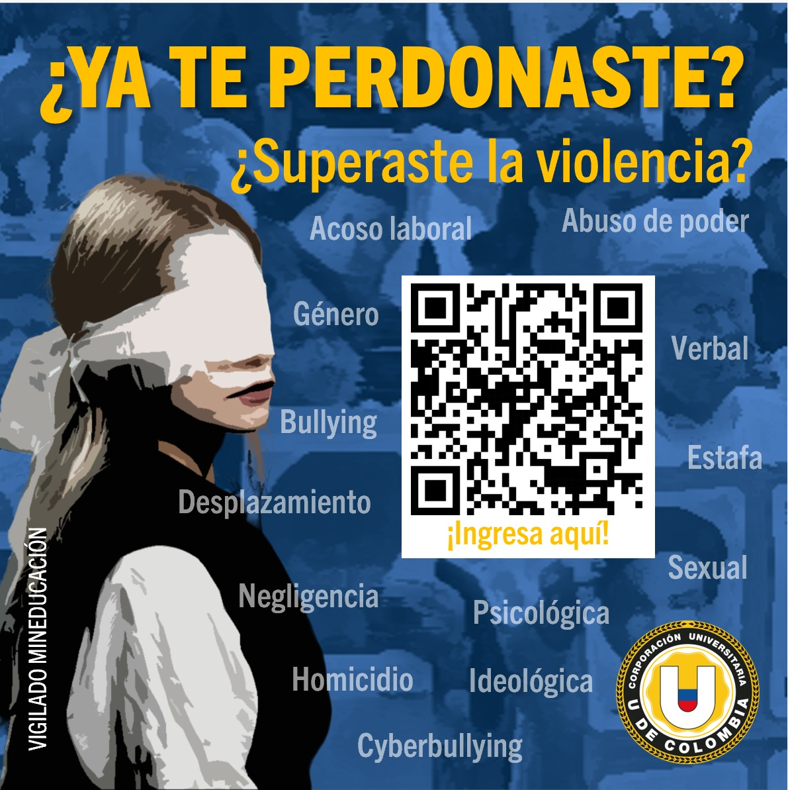

Noticias
III Congreso Internacional de Victimología

17 y 18
NOV
El perdón un camino hacia la reparación
III Congreso Internacional de Victimología
17 y 18
NOV
El perdón un camino hacia la reparación
III Congreso Internacional de Victimología
17 y 18
NOV
El perdón un camino hacia la reparación
III Congreso Internacional de Victimología
17 y 18
NOV
El perdón un camino hacia la reparación
Nuestros Pogramas de Pregrado a Distancia
Nuestros Pogramas de Pregrado a Distancia
CURSO BASES DE DATOS
Aprende a acceder a nuestra biblioteca utilizando nuestro sistema académico Q10, encuentra lo que necesitas en nuestras diferentes bases de datos virtuales o consulta en los mas de 3000 ejemplares físicos.
Tipo de curso: Abierto - Automatrícula
Modalidad: Virtual
Animated Accordion
Click on the buttons to open the collapsible content.
Podrá acceder a los cursos que tengas matriculados en el semestre actual, yendo a la sección de “Mis Cursos” en la barra de menú principal. Es la tercera opción de izquierda a derecha.
Para acceder a las clases sincrónicas, primero debes ir al curso que encontrarás en la sección de “Mis Cursos”, luego en la parte principal encontrarás un botón que dice clase sincrónica, al darle clic te llevará a interactuar con la interfaz del sistema de reunión sincrónica y podrás entrar a la clase..
Cuando olvides tu nombre de usuario y contraseña recuerda qué, siempre a tu correo se te envían las credenciales de acceso, puedes ir y revisar y aun conservas dicho correo, de lo contrario, ponte en contacto con nosotros escribiendo a lvirtualidad@udecolombia.edu.co
Recuerda que el portal educativo es el espacio para realizar todos los contenidos académicos de los programas en modalidad a distancia, diplomados y cursos virtuales, pero si deseas ver y tener el registro e historial de tus notas, lo debes hacer visitando nuestro sistema académico Q10. Para ir a Q10 debes ir a la pagina de la universidad “udecolombia.edu.co” y dar clic en Q10 Sistema Académico” en la barra de menú principal, es la tercera opción de derecha a izquierda.
Si tuviste dificultades a la hora de estar realizando una actividad y por problemas de luz o internet no pudiste terminarla, primero debes contactar con tu profesor, el te escuchará y tomará cartas en el asunto. Recuerda que quien puede autorizar aplazamiento o repetir actividades es el docente, no el líder de virtualización.
Si no encuentras un corso que debes tener matriculado en el portal educativo, ponte en contacto con el líder de virtualización, escribiendo a “lvirtualidad@udecolombia.edu.co”. Si no encuentras el curso en Q10 debes ponerte en contacto con el área de Admisiones y registro a “admisiones4@udecolombia.edu.co”